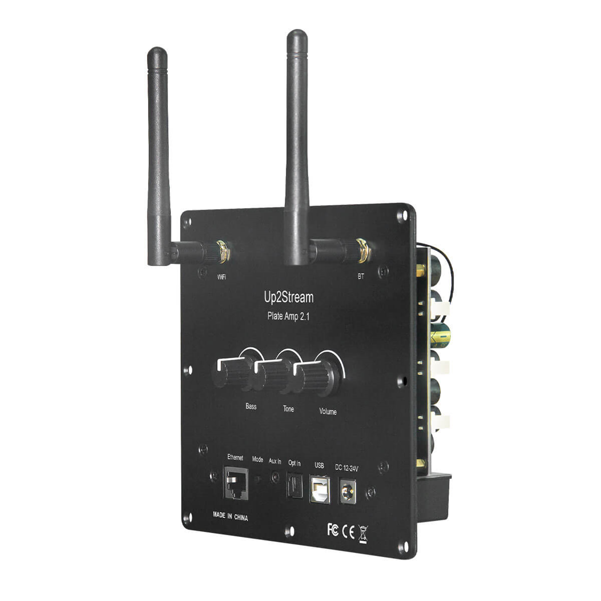
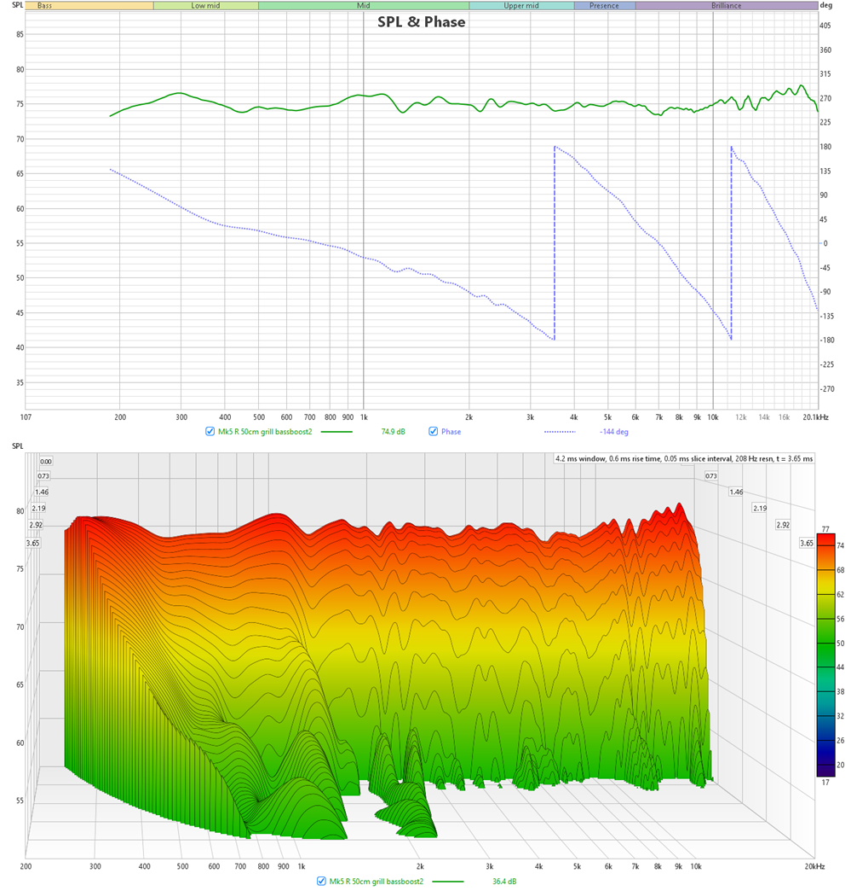
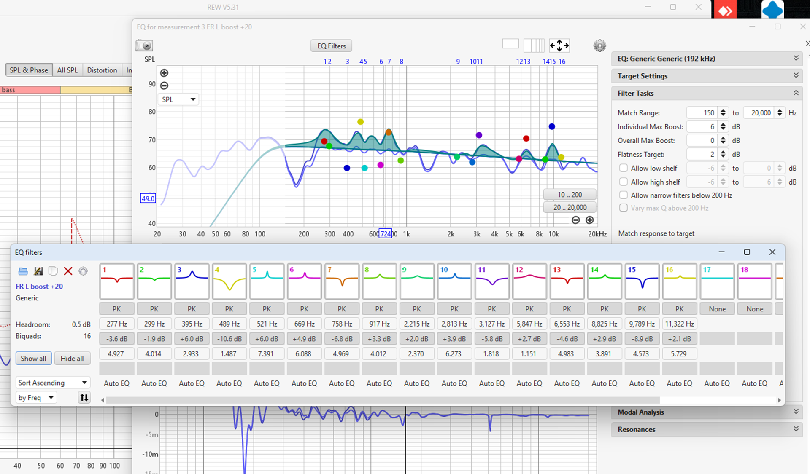
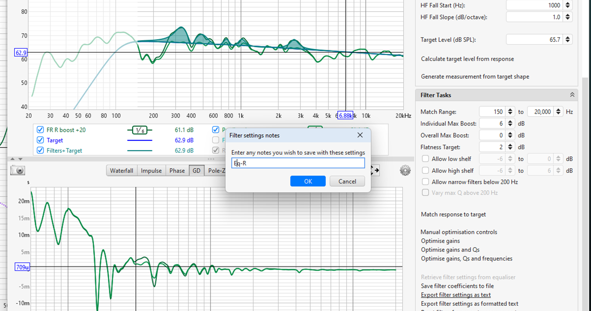

Making MK-5 log EP 1
โปรเจคลำโพงใหม่เสร็จเสียที
จุดมุ่งหมายคือทำลำโพง hi-end ให้เล็กที่สุดเท่าที่ทำได้เพื่อมาวางไว้บนโต๊ะคอมพิวเตอร์ ดังนั้น
- ความดังไม่ใช่ปัญหา ไม่ต้องดังมาก
- เนื่องจากตัวเล็ก ต้องแยกซัพเพื่อจะเล่นความถี่ต่ำ
- ซัพที่ใช้จะเป็น sealed box หรือตู้ปิด เพื่อให้ได้ transient ที่ดีที่สุด
- ใช้ DSP ช่วยบูสย่านต่ำ
ตอนนี้จะเป็นอุปกรณ์ที่เลือก และค่าดิบ ๆ ที่วัดได้ก่อนทำคอสโอเวอร์ ถ้าใครสนใจอยากได้ไฟล์ดิบไปลองออกแบบเล่น ๆ ก็คอมเมนต์บอกผมได้นะ ตอนต่อไปเดี๋ยวผมจะแปะลิงค์ให้
- ลำโพงซ้าย ขวา เป็นลำโพงเล็ก ๆ ขนาดประมาณ 14 x 8 x 13 ซม. ออกแบบความถี่พอร์ตไว้ที่ประมาณ 95Hz สุดท้ายทำออกมาใส่ damping เยอะไปหน่อยลงไปลึกถึง 85Hz เลย
- ดอกลำโพงวูฟเฟอร์ ดอกวูฟเฟอร์ที่ใช้ในงานนี้คือ SEAS OR004-04 FL6RBND/S เป็นลำโพง 2 นิ้ว เล่นความถี่ได้ดีตั้งแต่ประมาณ 150 - 5000 Hz แต่ก็มีข้อเสียงอย่างนึง
- ข้อเสีย ข้อเสียของดอกนี้เป็นข้อเสียเดียวกับดอกกรวยอลูมีเนียม คือ มันสั่น ถ้าสังเกตจากกราฟ SPL จะเห็นยอดที่ผมวงกลมไว้ที่ประมาณ 1600Hz หรือถ้าดูจากกราฟจากผู้ผลิตก็จะเห็นยอกนี้เช่นกัน
ยอกนี้มีผลอย่างไร? ถ้ามาดูที่กราฟน้ำตก หรือ spectral decay ด้านล่าง จะเห็นคลื่นออกมาตรงช่วงแถว ๆ 1600Hz พอดี การที่มีคลื่นออกมาแบบนี้จะทำให้ผู้ฟัง ฟังไปนาน ๆ แล้วหูล้า และยิ่งอยู่ในช่วง 1k - 4k Hz ที่เป็นช่วงที่หูคนจะดีที่สุดด้วยแล้ว จะทำให้เกิดหูล้าเร็วยิ่งขึ้น หรือบางคนถ้าฟังเสียงไปนาน ๆ อาจจะเกิดอาการปวดหูได้เลย
ทางแก้ที่ดีที่สุดคือใช้คอสโอเวอร์ตัดมันออกไปเลย แต่ผมทำไม่ได้เพราะว่า …
- ลำโพงทวิสเตอร์
ทวิสเตอร์ AIYIMA ตัวนี้เล่นความถี่ได้ดีตั้งแต่ 2k ขึ้นไป ทำให้การตัดคอสโอเวอร์นั้นจะต้องทำที่ 2k Hz ขึ้นไปด้วย
- ข้อดีของทวิสเตอร์ตัวนี้ดีอย่างนึงคือความเพี้ยนนั้นน้อยมาก (แต่ทวิสเตอร์ที่เพี้ยนน้อยระดับนี้ก็หาได้ไม่ยากเท่าไหร่แหละ)
- ต่อมาจะเป็นซัฟวูฟเฟอร์ ขนาดประมาณ 20 x 20 x 25 ซม. โบกด้วยปูนตามสไตล์ของผมทำให้สุดท้ายหนักเกือบ 9 กก. ซัฟวูฟเฟอร์นี้จะเป็นแบบ Active ขับซัฟและลำโพงซ้าย-ขวา และเป็น DAC ในตัว สามารถต่อกับคอมพิวเตอร์ได้เลย

- ดอกซัฟวูฟเฟอร์ ดอกซัฟวูฟเฟอร์ที่ใช้เป็นของ Tang Band ที่ขึ้นชื่อว่าให้ Xmax มาเยอะมาก ทำให้ขับได้ลึก ถึงแม้จะมีขนาดแค่ 5 นิ้วครึ่งเท่านั้น
- DAC Amp เลือกใช้ Up2Stream Plate Amp 2.1 ของ Alylic เป็น DAC และ DSP ในตัวสามารถตั้ง EQ ได้เลย ชิปของแอมป์คิดว่าน่าจะเป็น TPA3116D2 ส่วนชิป DAC นี่เขาปิดไว้ ถ้าอยากรู้ว่าเป็นตัวไหนน่าจะต้องขุดกันหน่อย คาแรคเตอร์ของ plate ตัวนี้คือเหมือนกับ TPA3116D2 ของ Alylic ตัวอื่น ๆ ค่าความเพี้ยนที่วัดได้ออกมาจากเสียงนี่เหมือนกับตัวที่ผมเคยวัดมาก่อนเลย https://www.facebook.com/groups/791461357947350/permalink/1878204199273055/

- Subwoofer Frequency Response วัดด้วยวิธี near field measurement ยังไม่ได้ปรับ DSP จุด crossover อยู่ที่ 110 Hz f3 อยู่ที่ ประมาณ 60 Hz
จุดที่น่าสนใจ ความดังที่ 60Hz อยู่ที่ 99dB (อย่าสนใจว่าดังเกิดไปเพราะได้จากการวัด near field) ความดังที่ 30Hz อยู่ที่ 87dB จะเห็นว่าลดลงไป -12dB ต่อ octave ตามทฤษฎี
Making MK-5 log EP2
EP1 https://www.facebook.com/groups/791461357947350/permalink/1984428265317314/
ตอนนี้จะเป็นการทำ crossover และปรับ Eq
- เริ่มจาก crossover ก่อนเลย ตัวนี้ยอมรับว่าผมมีปัญหากับการจัดการเฟส ตอนแรกอยากให้ตัดตั้งแต่ 2k นิด ๆ แต่เฟสมันไม่ตรงกันซักที จะใช้ serial notch เข้าไปปรับเฟสก็จะแพงไปหน่อย เลยเลือกไป crossover ที่ 5k Hz แทน แต่เนื่องจากตัดที่ความถี่สูงมาก มันก็จะมีปัญหาตามมาเช่นกันซึ่งเดี๋ยวจะมาพูดถึงอีกที
- การวาง crossover เทคนิคการออกแบบ crossover ที่ผมชิบใช้ คือเอา component ต่าง ๆ ไปเรียงบนกระดาษแข็งก่อน แล้วค่อยนำไปออกแบบแผ่นจริง ซึ่งบางคนอาจจะสะดวกใช้ไม้ ส่วนผมเนื่องจากไม่มีทั้งไม้และอุปกรณ์เลยใช้ 3d printing แทน การวางขดลวดตัวนำใกล้ ๆ กันจะต้องระวังทิศทางการวางพอสมควร เพื่อไม่ให้สัญญาณมันไปรบกวนกัน

- วัดการตอบสนองความถี่ (Frequency Response, FR) หลังทำ crossover ผลการวัดออกมาใกล้เคียงที่ออกแบบไว้นับว่าน่าพอใจ
- วัดการตอบสนองความถี่ (Frequency Response, FR) เมื่อใส่หน้ากาก ผ้าปิดหน้าลำโพงที่ดีจะต้องไม่ทำให้ความถี่เปลี่ยนแปลงไปมาก อย่างของผมหน้ากากนี้จะลดความดังเสียงของความถี่ตั้งแต่ 10k Hz ขึ้นไปลงไประมาณ 1 dB
- คราวนี้มาถึงปัญหาที่เกิดขึ้นจากการตัด crossover สูง ๆ รูปนี้เป็นการวัด FR นอกแกนหลักตามแนวตั้ง (vertical off-axis frequency response)
จะเห็นว่าความกว้างของความถี่ 5k Hz นั้นแคบมาก ประมาณแค่ 30 องศาเท่านั้นเอง ซึ่งก็เกิดจากการแทรกสอดของเสียงระหว่างดอกลำโพงทั้งสองดอกที่ความถี่ crossover
ความถี่ 5k นั้นจะมีความยาวคลื่นสั้นเพียง 6 ซม. เท่านั้น ซึ่งพอ ๆ กับระยะห่างของลำโพงทั้งสองดอก ซึ่งก็จะเห็นว่า FR ที่ 60 องศา นั้นหายไปอย่างชัดเจนเลยทีเดียว
แต่เนื่องจากมันเป็นการตอบสนองความถี่ตามแนวตั้ง และผมก็ใช้ลำโพงนี้เป็นลำโพงตั้งโต๊ะเปิดเสียงดังไม่เกิน 75dB ปัญหานี้เลยไม่ต้องแก้ไขก็ได้ หรืออย่างมาก ก็แค่หาอะไรมาหนุนให้ลำโพงเชิดขึ้นหน่อย เล็งให้เสียง on-axis เข้าหูไปเลย
- มาดูอีกปัญหานึงที่เคยบอกไว้ใน Ep ที่แล้ว นั่นคือลำโพงที่สั่นตรงประมาณ 1.6k Hz ซึ่งผมจะลองแก้ด้วย Eq ดูก่อน ซึ่งถ้าเสียงมันออกมาดูดีขึ้นพอรับได้ก็โอเค แต่ถ้าไม่สำเร็จก็คงจะต้องยอมปรับ Eq ให้มีหลุมที่ 1.6k Hz เล็กน้อย
- การ Eq ผมจะใช้ auto Eq ของ REW (โปรแกรมที่ทั้งเทพ ทั้งฟรี และทำได้ทุกอย่าง) เบื่องต้นผมจะตัดเฉพาะ 1.6k Hz ออกไปก่อน
- ผมจากการตัด 1.6k Hz ออกไปหน่อย จะเห็นว่าการสะสมพลังงานที่ 1.6k Hz หายไปเยอะมาก
- ลองเปิด Eq ตำแหน่งอื่น ๆ ให้กราฟออกมาเรียบ
- กราฟ FR ออกมาเรียบสะใจมาก การสะสมพลังงานในกราฟ waterfall ก็น้อยลง นับว่าดีเลยทีเดียว

- กราฟความเพี้ยน ส่วนใหญ่ต่ำกว่า 1% มีแท่ง 2% ขึ้นมาแท่งนึง
- Group Delay ตามนิยามหนึ่งของ group delay คือ ค่าเฟสของการตอบสนองความถี่ที่เปลี่ยนไป หรือ ความชันของกราฟเฟสนั่นแหละ (ซึ่งกราฟเฟสนี้จะต้องเป็น minimum phase ด้วยนะ)
ดังนั้นสำหรับคนที่ชอบดูว่าเฟสของ FR เรียบไหม ถ้าโปรแกรมที่ใช้สามารถดูค่า GD ได้ ผมแนะนำให้ดูตัวนี้จะดีกว่า ซึ่งก็จะมีงานวิจัยหลาย ๆ ตัวเอาค่านี้มาว้เคราะห์ด้วย แต่สรุปง่าย ๆ คือตั้งแต่ความถี่ 100 Hz ขึ้นไปถ้าค่านี้ไม่เกิน 4ms นับว่าใช้ได้
Making MK-5 log EP 3
และแล้วก็ถึงเวลาแห่งความจริง!! ไม่ว่าจะออกแบบลำโพงมาดีขนาดไหนก็ตามเมื่อเอามาติดตั้งในห้องแล้ว ถ้าห้องนั้นไม่ได้ออกแบบอะคูสติกมาดีพอ ก็สามารถคาดเดาผลลัพท์สุดท้ายได้ในคำเดียวว่า
”ยับ”
ดู EP1 - https://www.facebook.com/groups/791461357947350/permalink/1984428265317314/
อ่าน EP2 - https://www.facebook.com/groups/791461357947350/permalink/1984991758594298/
ตอนนี้ผมจะมาแชร์การติดตั้งลำโพง MK5 ของผม บนโต๊ะคอมพิวเตอร์ที่ผมใช้ทำงานอยู่ทุกวัน
- อันดับแรกผมเอารูปห้องและโต๊ะทำงานให้ดูก่อน ขนาดของห้องเนื่องจากเป็นห้องตึกแถวเต็มชั้น จึงมีความยาวเกือบ ๆ 1280 ซม. กว่างประมาณ 206 ซม. และสูง 261 ซม. มีกันห้องให้บันได ทำให้ห้องไม่ได้เป็นสี่เหลี่ยมผื่นผ้า 100%
- จุดวางลำโพงซ้าย-ขวา นี่เป็นความเลวร้ายที่ 1 ของโต๊ะทำงานของผม เนื่องจากเฟอร์นิเจอร์มันถูกออกแบบบิ้วอินมากว่า 20 ปีละที่วางจอคอมพิวเตอร์เลยเป็นช่องเล็ก ๆ แบบนี้ เสียงเข้าไปก้องดีเชียวเลยหละ
เหตุหนึ่งที่ต้องการลำโพงเล็ก ๆ ก็เพราะอยากเปลี่ยนจอจาก 24 นิ้ว เป็น 27 นิ้วด้วยแหละ ขนาดคับตู้แน่นอน
- จุดวางซัฟวูฟเฟอร์
แน่นนอนว่าต้องลงไปไว้ใต้เ๊ต๊ะคอม หันมุมที่สายจะเกะกะน้อยที่สุด และขาไม่ไปเตะดอกลำโพงด้วย ทำ spacer เว้นระยะไม่ให้ดอกลำโพงชนผนังโต๊ะเป็นอันใช้ได้
- ผลการวัดเสียงซ้าย-ขวา
ยับอย่างที่คาด และเป็นหลุมหนักมาก ๆ ที่ประมาณ 150-220 Hz ซึ่งมันคืออะไรเดี๋ยวว่ากันต่อ
- เช็คเฟสซัพนิดหน่อย ก็จะเห็นว่าเฟสของซัพที่จุด crossover ที่ 110 Hz นั้นไม่มีปัญหา ช่วง 150-220 Hz ซัพก็ไม่ได้ทำงานแล้วด้วย
- Room Mode Room mode เป็นการสั่นพ้องที่เกิดจากขนาดของห้อง ทำให้บางตำแหน่งมีความถี่ หนึ่ง ๆ ที่ดังขึ้นหรือเบาลง ซึ่งเมื่อผมเอาขนาดห้องของผมไปใส่แล้วก็ได้ผลออกมาว่ามีความถี่สั่นพ้องในช่วงที่มีปัญหาถึง 60 ความถี่ ซึ่งก็พอจะเป็นต้นเหตุการหายไปของ 150-220 Hz ได้
วิธีแก้ก็คือไปหาแผ่นอะคูสติกแบบหนา ๆ หน่อยมาติดซับเสียง ซึ่งไว้วันหลังผมอาจจะมีโปรเจคทำแผ่นอะคูสเองแล้วเอามาวิธีทำแชร์ครับ
ส่วนใครสนใจอย่าลองเล่นโปรแกรมนี้ดูสามารถใช้ได้ที่
https://amcoustics.com/tools/amroc?l=1280&w=206&h=261&re=DIN%2018041%20-%20Music
- ความถี่อื่น ๆ ถ้าใครสังเกตคงจะเห็นว่ากราฟที่ผมใช้ในตอนนี้จะแตกต่างจากกราฟในตอนก่อน ๆ ที่ผมเคยทำมา ในตอนเก่า ๆ ผมจะใช้เทคนิควัด near field + far field และกำหนด IR window เพื่อตัดเสียงส่วนที่สะท้อนจากห้องออกให้หมด ส่วนในตอนนี้ผมจะใช้ 1/6 smoothing เพื่อให้ได้มีบันทึกเสียงที่เกิดจากการ สั่น หรือ สะท้อน ภายในห้องมาด้วย
กราฟนี้จะเห็นว่าจะมีความถี่สูงบ้างต่ำบ้างเป็นคลื่น ๆ สิ่งที่ผมจะทำต่อไป แน่นอนคือ EQ มัน แต่เวลา EQ คราวนี้จะไม่ทำให้มันเรียบ เพราะจะต้องมีการชดเชยเสียงที่เกิดจาก Early reflection เข้าไปด้วย ซึ่งวิธีชดเชยนั้นผมยังไม่แน่ใจ ยังเป็นเรื่องที่ผมต้องศึกษาเพื่มเติมต่อไป
- EQ ด้วย REW เซตค่า Early reflection ให้เรียบร้อยตั้ง target และก็กด match response to target โปรแกรมก็จะคำนวณค่าฟิวเตอร์ให้เรียบร้อย
สังเกตโปรแกรมจะไม่ EQ ช่วงที่ GD ต่ำ ๆ ให้ เพราะว่ามันแก้ด้วย EQ ไม่ได้

- ค่าฟิวเตอร์ที่ได้

- ทดลองวัดโดยใช้ฟิวเตอร์
- ทำซ้ำกับอีกข้าง
เมื่อเสร็จแล้วก็ export filter settings as text ทั้งสองข้างออกมา

-
หน้าตาของไฟล์ฟิวเตอร์
-
ใส่ฟิวเตอร์ลงในโปรแกรม Equalizer APO
เป็นอันเสร็จสิ้น
- อีกส่วนหนึ่งที่น่าสนใจคือกราฟ waterfall
waterfall เดิมที่ผมใช้จะใช้ดูการสะสมพลังงานที่เกิดขึ้นจากลำโพง ซึ่งก็จะดูที่ระยะเวลาสั่น ๆ ไม่เกิน 4ms
ส่วนรูปนี้เป็นการสะสมพลังงานภายในห้องซึ่งจะมีหลักการประมาณว่า ห้องที่ดี (ระดับ home theater) ความดังจะต้องลดลง 60dB ภายใน 400ms
ซึ่งกราฟของผมเนื่องจากอัดที่ความดังมากกว่าที่ผมฟังปกติเล็กน้อย ซึ่งก็อยู่ประมาณ 70dB (ไม่ได้ calibrate SPL มาหนะขออภัย) ซึงจริง ๆ ต้องดูลงไปถึง 10 dB เลย แต่โต๊ะผมมันมี noise มาจากพัดลม PC ที่ตั้งอยู่ข้าง ๆ ซึ่งดังไปถึง ประมาณ 30dB ผมเลยเซตขอบล่างอยู่ที่ 30dB ซึ่งกราฟที่ออกมาก็ดูดีกว่าที่คิด
- ลองฟังเสียง
เหมือนเดิมถ้าผมโพสเพลงลงมาเลยผมโดนแบนแน่ ๆ ดังนั้นผมขอโยนลงไปใน Google Drive ละกัน สามารถเปิดฟังได้เลย หรือใครจะสะดวกจะ download ลงมาก่อนก็แล้วแต่
เพลงที่ใช้วันนี้เป็นเพลง No Promises to Keep ของ LOREN ALLRED ต้นฉบับ https://www.youtube.com/watch?v=N8ZyP-AsVeA
ไฟล์เสียง https://drive.google.com/file/d/1ho7rKuvIVzr4SRGWK1_f3HDNCAt6h0E3/view?usp=drive_link
ถ้าใครได้ยินเสียง noise ดัง ๆ นั่นคือเสียงฟัดลม PC ผมเอง : P